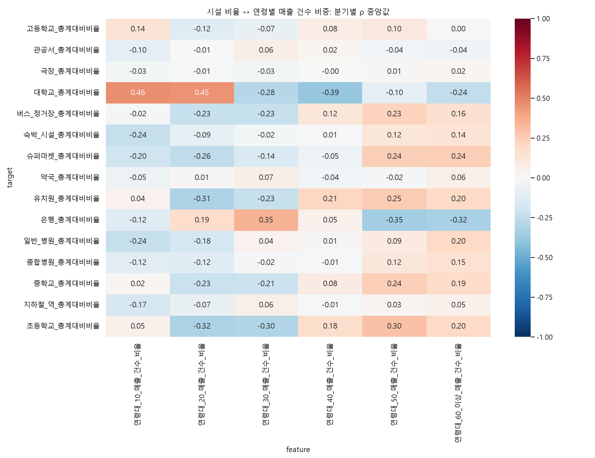
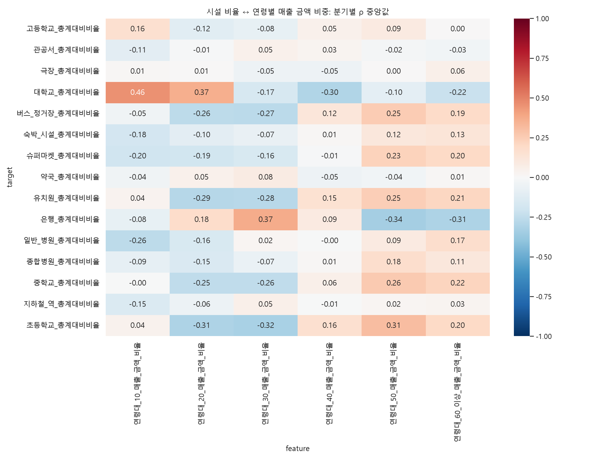

행정동·같은 분기 간 Spearman 탐색 분석. 시설이 소비 연령을 결정한다는 인과 검증이나 연령대 군집 분류는 아닙니다. 시설별 수/원본 집객시설 수 비율을 사용하며 세부합과 총계가 달라 합계 100% 구성비가 아닙니다. 시설 결측을 0으로 채우지 않으므로 관측 시설이 있는 일부 지역에 편향될 수 있습니다. 연령 비중=해당 연령 매출/연령이 확인된 전체 매출(금액·건수 별도). 연령 비중은 합계 100%이므로 한 연령의 증가가 다른 연령의 감소와 연결되며 독립 증거가 아닙니다. 건수는 고유 고객 수가 아니고 금액은 객단가의 영향을 받습니다. 시설 비율 증가도 실제 시설 수 증가와 다릅니다. 지역 규모·업종 구성·공간 의존성을 통제하지 않았으며 q값도 공간 의존성 미보정 참고값입니다. |ρ 중앙값|≥0.3 및 방향 일치≥80%는 요약용 탐색 기준일 뿐 가설 채택 기준이 아닙니다.
유효 조합 90개 중 탐색 기준 해당 9개. 아래는 절대 중앙값 순 상위 8개이며 전체 조합도 별도 표에 제공합니다.
| feature | target | median_rho | min_rho | max_rho | quarters | min_n | max_n | positive_fraction | negative_fraction | direction_consistency | exploratory_candidate |
|---|---|---|---|---|---|---|---|---|---|---|---|
| 연령대_10_매출_건수_비율 | 대학교_총계대비비율 | 0.462812 | 0.343176 | 0.544518 | 20 | 121 | 121 | 1.0 | 0.0 | 1.0 | True |
| 연령대_20_매출_건수_비율 | 대학교_총계대비비율 | 0.451079 | 0.366639 | 0.524710 | 20 | 121 | 121 | 1.0 | 0.0 | 1.0 | True |
| 연령대_40_매출_건수_비율 | 대학교_총계대비비율 | -0.388438 | -0.487780 | -0.256648 | 20 | 121 | 121 | 0.0 | 1.0 | 1.0 | True |
| 연령대_30_매출_건수_비율 | 은행_총계대비비율 | 0.349336 | 0.325915 | 0.377372 | 20 | 368 | 368 | 1.0 | 0.0 | 1.0 | True |
| 연령대_50_매출_건수_비율 | 은행_총계대비비율 | -0.347390 | -0.366095 | -0.303497 | 20 | 368 | 368 | 0.0 | 1.0 | 1.0 | True |
| 연령대_60_이상_매출_건수_비율 | 은행_총계대비비율 | -0.321613 | -0.341166 | -0.293769 | 20 | 368 | 368 | 0.0 | 1.0 | 1.0 | True |
| 연령대_20_매출_건수_비율 | 초등학교_총계대비비율 | -0.319660 | -0.332208 | -0.304574 | 20 | 360 | 361 | 0.0 | 1.0 | 1.0 | True |
| 연령대_20_매출_건수_비율 | 유치원_총계대비비율 | -0.305087 | -0.317952 | -0.267022 | 20 | 284 | 284 | 0.0 | 1.0 | 1.0 | True |

| feature | target | median_rho | min_rho | max_rho | quarters | min_n | max_n | positive_fraction | negative_fraction | direction_consistency | exploratory_candidate |
|---|---|---|---|---|---|---|---|---|---|---|---|
| 연령대_10_매출_건수_비율 | 대학교_총계대비비율 | 0.462812 | 0.343176 | 0.544518 | 20 | 121 | 121 | 1.00 | 0.00 | 1.00 | True |
| 연령대_20_매출_건수_비율 | 대학교_총계대비비율 | 0.451079 | 0.366639 | 0.524710 | 20 | 121 | 121 | 1.00 | 0.00 | 1.00 | True |
| 연령대_40_매출_건수_비율 | 대학교_총계대비비율 | -0.388438 | -0.487780 | -0.256648 | 20 | 121 | 121 | 0.00 | 1.00 | 1.00 | True |
| 연령대_30_매출_건수_비율 | 은행_총계대비비율 | 0.349336 | 0.325915 | 0.377372 | 20 | 368 | 368 | 1.00 | 0.00 | 1.00 | True |
| 연령대_50_매출_건수_비율 | 은행_총계대비비율 | -0.347390 | -0.366095 | -0.303497 | 20 | 368 | 368 | 0.00 | 1.00 | 1.00 | True |
| 연령대_60_이상_매출_건수_비율 | 은행_총계대비비율 | -0.321613 | -0.341166 | -0.293769 | 20 | 368 | 368 | 0.00 | 1.00 | 1.00 | True |
| 연령대_20_매출_건수_비율 | 초등학교_총계대비비율 | -0.319660 | -0.332208 | -0.304574 | 20 | 360 | 361 | 0.00 | 1.00 | 1.00 | True |
| 연령대_20_매출_건수_비율 | 유치원_총계대비비율 | -0.305087 | -0.317952 | -0.267022 | 20 | 284 | 284 | 0.00 | 1.00 | 1.00 | True |
| 연령대_30_매출_건수_비율 | 초등학교_총계대비비율 | -0.303079 | -0.320481 | -0.265874 | 20 | 360 | 361 | 0.00 | 1.00 | 1.00 | True |
| 연령대_50_매출_건수_비율 | 초등학교_총계대비비율 | 0.295916 | 0.252191 | 0.319133 | 20 | 360 | 361 | 1.00 | 0.00 | 1.00 | False |
| 연령대_30_매출_건수_비율 | 대학교_총계대비비율 | -0.282991 | -0.376604 | -0.184237 | 20 | 121 | 121 | 0.00 | 1.00 | 1.00 | False |
| 연령대_20_매출_건수_비율 | 슈퍼마켓_총계대비비율 | -0.257664 | -0.304559 | -0.241764 | 20 | 90 | 90 | 0.00 | 1.00 | 1.00 | False |
| 연령대_50_매출_건수_비율 | 유치원_총계대비비율 | 0.253191 | 0.219979 | 0.282793 | 20 | 284 | 284 | 1.00 | 0.00 | 1.00 | False |
| 연령대_50_매출_건수_비율 | 슈퍼마켓_총계대비비율 | 0.243653 | 0.165081 | 0.289774 | 20 | 90 | 90 | 1.00 | 0.00 | 1.00 | False |
| 연령대_50_매출_건수_비율 | 중학교_총계대비비율 | 0.243259 | 0.161483 | 0.274000 | 20 | 253 | 253 | 1.00 | 0.00 | 1.00 | False |
| 연령대_60_이상_매출_건수_비율 | 대학교_총계대비비율 | -0.243042 | -0.315286 | -0.203754 | 20 | 121 | 121 | 0.00 | 1.00 | 1.00 | False |
| 연령대_60_이상_매출_건수_비율 | 슈퍼마켓_총계대비비율 | 0.242307 | 0.201311 | 0.303127 | 20 | 90 | 90 | 1.00 | 0.00 | 1.00 | False |
| 연령대_10_매출_건수_비율 | 숙박_시설_총계대비비율 | -0.242043 | -0.303903 | -0.096152 | 20 | 101 | 101 | 0.00 | 1.00 | 1.00 | False |
| 연령대_10_매출_건수_비율 | 일반_병원_총계대비비율 | -0.241964 | -0.269213 | -0.189556 | 20 | 137 | 137 | 0.00 | 1.00 | 1.00 | False |
| 연령대_30_매출_건수_비율 | 버스_정거장_총계대비비율 | -0.233346 | -0.269859 | -0.168406 | 20 | 423 | 424 | 0.00 | 1.00 | 1.00 | False |
| 연령대_20_매출_건수_비율 | 버스_정거장_총계대비비율 | -0.232780 | -0.251923 | -0.214933 | 20 | 423 | 424 | 0.00 | 1.00 | 1.00 | False |
| 연령대_30_매출_건수_비율 | 유치원_총계대비비율 | -0.231069 | -0.269098 | -0.184934 | 20 | 284 | 284 | 0.00 | 1.00 | 1.00 | False |
| 연령대_50_매출_건수_비율 | 버스_정거장_총계대비비율 | 0.229346 | 0.194464 | 0.254910 | 20 | 423 | 424 | 1.00 | 0.00 | 1.00 | False |
| 연령대_20_매출_건수_비율 | 중학교_총계대비비율 | -0.226141 | -0.243042 | -0.184855 | 20 | 253 | 253 | 0.00 | 1.00 | 1.00 | False |
| 연령대_30_매출_건수_비율 | 중학교_총계대비비율 | -0.211868 | -0.252179 | -0.170970 | 20 | 253 | 253 | 0.00 | 1.00 | 1.00 | False |
| 연령대_40_매출_건수_비율 | 유치원_총계대비비율 | 0.211768 | 0.132176 | 0.265650 | 20 | 284 | 284 | 1.00 | 0.00 | 1.00 | False |
| 연령대_60_이상_매출_건수_비율 | 일반_병원_총계대비비율 | 0.202945 | 0.181141 | 0.224631 | 20 | 137 | 137 | 1.00 | 0.00 | 1.00 | False |
| 연령대_60_이상_매출_건수_비율 | 유치원_총계대비비율 | 0.202333 | 0.167780 | 0.222407 | 20 | 284 | 284 | 1.00 | 0.00 | 1.00 | False |
| 연령대_10_매출_건수_비율 | 슈퍼마켓_총계대비비율 | -0.201928 | -0.325172 | -0.124603 | 20 | 90 | 90 | 0.00 | 1.00 | 1.00 | False |
| 연령대_60_이상_매출_건수_비율 | 초등학교_총계대비비율 | 0.199605 | 0.166858 | 0.234549 | 20 | 360 | 361 | 1.00 | 0.00 | 1.00 | False |
| 연령대_60_이상_매출_건수_비율 | 중학교_총계대비비율 | 0.189526 | 0.159329 | 0.211744 | 20 | 253 | 253 | 1.00 | 0.00 | 1.00 | False |
| 연령대_20_매출_건수_비율 | 은행_총계대비비율 | 0.185334 | 0.161780 | 0.205026 | 20 | 368 | 368 | 1.00 | 0.00 | 1.00 | False |
| 연령대_20_매출_건수_비율 | 일반_병원_총계대비비율 | -0.179576 | -0.202480 | -0.158637 | 20 | 137 | 137 | 0.00 | 1.00 | 1.00 | False |
| 연령대_40_매출_건수_비율 | 초등학교_총계대비비율 | 0.177845 | 0.107406 | 0.263443 | 20 | 360 | 361 | 1.00 | 0.00 | 1.00 | False |
| 연령대_10_매출_건수_비율 | 지하철_역_총계대비비율 | -0.170781 | -0.197789 | -0.134671 | 20 | 228 | 229 | 0.00 | 1.00 | 1.00 | False |
| 연령대_60_이상_매출_건수_비율 | 버스_정거장_총계대비비율 | 0.161244 | 0.139221 | 0.194509 | 20 | 423 | 424 | 1.00 | 0.00 | 1.00 | False |
| 연령대_60_이상_매출_건수_비율 | 종합병원_총계대비비율 | 0.151938 | 0.119450 | 0.178706 | 20 | 52 | 52 | 1.00 | 0.00 | 1.00 | False |
| 연령대_30_매출_건수_비율 | 슈퍼마켓_총계대비비율 | -0.144364 | -0.192263 | -0.100985 | 20 | 90 | 90 | 0.00 | 1.00 | 1.00 | False |
| 연령대_60_이상_매출_건수_비율 | 숙박_시설_총계대비비율 | 0.138910 | 0.106421 | 0.156366 | 20 | 101 | 101 | 1.00 | 0.00 | 1.00 | False |
| 연령대_10_매출_건수_비율 | 고등학교_총계대비비율 | 0.135738 | 0.086237 | 0.198916 | 20 | 206 | 207 | 1.00 | 0.00 | 1.00 | False |
| 연령대_10_매출_건수_비율 | 은행_총계대비비율 | -0.122509 | -0.195238 | -0.046249 | 20 | 368 | 368 | 0.00 | 1.00 | 1.00 | False |
| 연령대_20_매출_건수_비율 | 종합병원_총계대비비율 | -0.121990 | -0.167350 | -0.099940 | 20 | 52 | 52 | 0.00 | 1.00 | 1.00 | False |
| 연령대_40_매출_건수_비율 | 버스_정거장_총계대비비율 | 0.119904 | 0.064231 | 0.205781 | 20 | 423 | 424 | 1.00 | 0.00 | 1.00 | False |
| 연령대_20_매출_건수_비율 | 고등학교_총계대비비율 | -0.119378 | -0.140774 | -0.105280 | 20 | 206 | 207 | 0.00 | 1.00 | 1.00 | False |
| 연령대_50_매출_건수_비율 | 숙박_시설_총계대비비율 | 0.117429 | 0.069685 | 0.134891 | 20 | 101 | 101 | 1.00 | 0.00 | 1.00 | False |
| 연령대_50_매출_건수_비율 | 종합병원_총계대비비율 | 0.116697 | 0.030353 | 0.160946 | 20 | 52 | 52 | 1.00 | 0.00 | 1.00 | False |
| 연령대_10_매출_건수_비율 | 종합병원_총계대비비율 | -0.115907 | -0.154927 | -0.051870 | 20 | 52 | 52 | 0.00 | 1.00 | 1.00 | False |
| 연령대_50_매출_건수_비율 | 고등학교_총계대비비율 | 0.103764 | 0.045736 | 0.136795 | 20 | 206 | 207 | 1.00 | 0.00 | 1.00 | False |
| 연령대_10_매출_건수_비율 | 관공서_총계대비비율 | -0.101512 | -0.152873 | -0.072396 | 20 | 423 | 423 | 0.00 | 1.00 | 1.00 | False |
| 연령대_50_매출_건수_비율 | 대학교_총계대비비율 | -0.099628 | -0.150047 | -0.040619 | 20 | 121 | 121 | 0.00 | 1.00 | 1.00 | False |
| 연령대_20_매출_건수_비율 | 숙박_시설_총계대비비율 | -0.089503 | -0.120691 | -0.055590 | 20 | 101 | 101 | 0.00 | 1.00 | 1.00 | False |
| 연령대_50_매출_건수_비율 | 일반_병원_총계대비비율 | 0.087994 | 0.012156 | 0.160670 | 20 | 137 | 137 | 1.00 | 0.00 | 1.00 | False |
| 연령대_40_매출_건수_비율 | 중학교_총계대비비율 | 0.080467 | -0.007265 | 0.158975 | 20 | 253 | 253 | 0.85 | 0.15 | 0.85 | False |
| 연령대_40_매출_건수_비율 | 고등학교_총계대비비율 | 0.076697 | 0.037707 | 0.108230 | 20 | 206 | 207 | 1.00 | 0.00 | 1.00 | False |
| 연령대_30_매출_건수_비율 | 고등학교_총계대비비율 | -0.072330 | -0.120766 | -0.016139 | 20 | 206 | 207 | 0.00 | 1.00 | 1.00 | False |
| 연령대_20_매출_건수_비율 | 지하철_역_총계대비비율 | -0.071777 | -0.092441 | -0.047346 | 20 | 228 | 229 | 0.00 | 1.00 | 1.00 | False |
| 연령대_30_매출_건수_비율 | 약국_총계대비비율 | 0.067990 | 0.011009 | 0.095327 | 20 | 423 | 423 | 1.00 | 0.00 | 1.00 | False |
| 연령대_30_매출_건수_비율 | 관공서_총계대비비율 | 0.064304 | 0.039196 | 0.084400 | 20 | 423 | 423 | 1.00 | 0.00 | 1.00 | False |
| 연령대_60_이상_매출_건수_비율 | 약국_총계대비비율 | 0.057693 | 0.038823 | 0.081935 | 20 | 423 | 423 | 1.00 | 0.00 | 1.00 | False |
| 연령대_30_매출_건수_비율 | 지하철_역_총계대비비율 | 0.055667 | 0.035327 | 0.086525 | 20 | 228 | 229 | 1.00 | 0.00 | 1.00 | False |
| 연령대_60_이상_매출_건수_비율 | 지하철_역_총계대비비율 | 0.052527 | -0.003521 | 0.076816 | 20 | 228 | 229 | 0.95 | 0.05 | 0.95 | False |
| 연령대_10_매출_건수_비율 | 약국_총계대비비율 | -0.052107 | -0.111376 | -0.022524 | 20 | 423 | 423 | 0.00 | 1.00 | 1.00 | False |
| 연령대_40_매출_건수_비율 | 은행_총계대비비율 | 0.051813 | -0.080504 | 0.156813 | 20 | 368 | 368 | 0.65 | 0.35 | 0.65 | False |
| 연령대_10_매출_건수_비율 | 초등학교_총계대비비율 | 0.047922 | -0.009353 | 0.079980 | 20 | 360 | 361 | 0.95 | 0.05 | 0.95 | False |
| 연령대_40_매출_건수_비율 | 슈퍼마켓_총계대비비율 | -0.047191 | -0.182780 | 0.064162 | 20 | 90 | 90 | 0.25 | 0.75 | 0.75 | False |
| 연령대_60_이상_매출_건수_비율 | 관공서_총계대비비율 | -0.043448 | -0.082304 | -0.031942 | 20 | 423 | 423 | 0.00 | 1.00 | 1.00 | False |
| 연령대_10_매출_건수_비율 | 유치원_총계대비비율 | 0.041434 | -0.019670 | 0.080953 | 20 | 284 | 284 | 0.95 | 0.05 | 0.95 | False |
| 연령대_30_매출_건수_비율 | 일반_병원_총계대비비율 | 0.041079 | 0.005115 | 0.065772 | 20 | 137 | 137 | 1.00 | 0.00 | 1.00 | False |
| 연령대_50_매출_건수_비율 | 관공서_총계대비비율 | -0.035850 | -0.073557 | -0.012341 | 20 | 423 | 423 | 0.00 | 1.00 | 1.00 | False |
| 연령대_40_매출_건수_비율 | 약국_총계대비비율 | -0.035471 | -0.084656 | -0.001214 | 20 | 423 | 423 | 0.00 | 1.00 | 1.00 | False |
| 연령대_50_매출_건수_비율 | 지하철_역_총계대비비율 | 0.029410 | -0.054024 | 0.063602 | 20 | 228 | 229 | 0.70 | 0.30 | 0.70 | False |
| 연령대_30_매출_건수_비율 | 극장_총계대비비율 | -0.026496 | -0.047372 | 0.017484 | 20 | 75 | 75 | 0.20 | 0.80 | 0.80 | False |
| 연령대_10_매출_건수_비율 | 극장_총계대비비율 | -0.025756 | -0.127280 | 0.034754 | 20 | 75 | 75 | 0.20 | 0.80 | 0.80 | False |
| 연령대_30_매출_건수_비율 | 숙박_시설_총계대비비율 | -0.024408 | -0.058543 | 0.004858 | 20 | 101 | 101 | 0.05 | 0.95 | 0.95 | False |
| 연령대_10_매출_건수_비율 | 버스_정거장_총계대비비율 | -0.019818 | -0.076403 | 0.014737 | 20 | 423 | 424 | 0.15 | 0.85 | 0.85 | False |
| 연령대_60_이상_매출_건수_비율 | 극장_총계대비비율 | 0.019305 | -0.009261 | 0.039477 | 20 | 75 | 75 | 0.85 | 0.15 | 0.85 | False |
| 연령대_40_매출_건수_비율 | 관공서_총계대비비율 | 0.017715 | -0.012436 | 0.055032 | 20 | 423 | 423 | 0.80 | 0.20 | 0.80 | False |
| 연령대_50_매출_건수_비율 | 약국_총계대비비율 | -0.016809 | -0.035661 | 0.032103 | 20 | 423 | 423 | 0.30 | 0.70 | 0.70 | False |
| 연령대_10_매출_건수_비율 | 중학교_총계대비비율 | 0.016189 | -0.070306 | 0.073551 | 20 | 253 | 253 | 0.80 | 0.20 | 0.80 | False |
| 연령대_30_매출_건수_비율 | 종합병원_총계대비비율 | -0.016095 | -0.056694 | 0.060536 | 20 | 52 | 52 | 0.30 | 0.70 | 0.70 | False |
| 연령대_40_매출_건수_비율 | 일반_병원_총계대비비율 | 0.012154 | -0.013227 | 0.063800 | 20 | 137 | 137 | 0.70 | 0.30 | 0.70 | False |
| 연령대_20_매출_건수_비율 | 극장_총계대비비율 | -0.011445 | -0.063249 | 0.028850 | 20 | 75 | 75 | 0.35 | 0.65 | 0.65 | False |
| 연령대_20_매출_건수_비율 | 약국_총계대비비율 | 0.011213 | -0.002213 | 0.035466 | 20 | 423 | 423 | 0.75 | 0.25 | 0.75 | False |
| 연령대_40_매출_건수_비율 | 종합병원_총계대비비율 | -0.011206 | -0.051955 | 0.013661 | 20 | 52 | 52 | 0.15 | 0.85 | 0.85 | False |
| 연령대_40_매출_건수_비율 | 지하철_역_총계대비비율 | -0.010833 | -0.074078 | 0.047934 | 20 | 228 | 229 | 0.30 | 0.70 | 0.70 | False |
| 연령대_50_매출_건수_비율 | 극장_총계대비비율 | 0.009766 | -0.037158 | 0.049777 | 20 | 75 | 75 | 0.60 | 0.40 | 0.60 | False |
| 연령대_20_매출_건수_비율 | 관공서_총계대비비율 | -0.006965 | -0.022526 | 0.016245 | 20 | 423 | 423 | 0.30 | 0.70 | 0.70 | False |
| 연령대_40_매출_건수_비율 | 숙박_시설_총계대비비율 | 0.005533 | -0.028284 | 0.044954 | 20 | 101 | 101 | 0.65 | 0.35 | 0.65 | False |
| 연령대_60_이상_매출_건수_비율 | 고등학교_총계대비비율 | 0.001837 | -0.025893 | 0.027346 | 20 | 206 | 207 | 0.55 | 0.45 | 0.55 | False |
| 연령대_40_매출_건수_비율 | 극장_총계대비비율 | -0.001529 | -0.050701 | 0.027143 | 20 | 75 | 75 | 0.45 | 0.55 | 0.55 | False |
유효 조합 90개 중 탐색 기준 해당 8개. 아래는 절대 중앙값 순 상위 8개이며 전체 조합도 별도 표에 제공합니다.
| feature | target | median_rho | min_rho | max_rho | quarters | min_n | max_n | positive_fraction | negative_fraction | direction_consistency | exploratory_candidate |
|---|---|---|---|---|---|---|---|---|---|---|---|
| 연령대_10_매출_금액_비율 | 대학교_총계대비비율 | 0.457209 | 0.349815 | 0.543536 | 20 | 121 | 121 | 1.0 | 0.0 | 1.0 | True |
| 연령대_30_매출_금액_비율 | 은행_총계대비비율 | 0.367549 | 0.335795 | 0.398510 | 20 | 368 | 368 | 1.0 | 0.0 | 1.0 | True |
| 연령대_20_매출_금액_비율 | 대학교_총계대비비율 | 0.366471 | 0.270572 | 0.419170 | 20 | 121 | 121 | 1.0 | 0.0 | 1.0 | True |
| 연령대_50_매출_금액_비율 | 은행_총계대비비율 | -0.338257 | -0.372596 | -0.311856 | 20 | 368 | 368 | 0.0 | 1.0 | 1.0 | True |
| 연령대_30_매출_금액_비율 | 초등학교_총계대비비율 | -0.322064 | -0.338407 | -0.292520 | 20 | 360 | 361 | 0.0 | 1.0 | 1.0 | True |
| 연령대_20_매출_금액_비율 | 초등학교_총계대비비율 | -0.311772 | -0.329696 | -0.285639 | 20 | 360 | 361 | 0.0 | 1.0 | 1.0 | True |
| 연령대_60_이상_매출_금액_비율 | 은행_총계대비비율 | -0.311058 | -0.330012 | -0.277398 | 20 | 368 | 368 | 0.0 | 1.0 | 1.0 | True |
| 연령대_50_매출_금액_비율 | 초등학교_총계대비비율 | 0.309968 | 0.271731 | 0.336762 | 20 | 360 | 361 | 1.0 | 0.0 | 1.0 | True |

| feature | target | median_rho | min_rho | max_rho | quarters | min_n | max_n | positive_fraction | negative_fraction | direction_consistency | exploratory_candidate |
|---|---|---|---|---|---|---|---|---|---|---|---|
| 연령대_10_매출_금액_비율 | 대학교_총계대비비율 | 0.457209 | 0.349815 | 0.543536 | 20 | 121 | 121 | 1.00 | 0.00 | 1.00 | True |
| 연령대_30_매출_금액_비율 | 은행_총계대비비율 | 0.367549 | 0.335795 | 0.398510 | 20 | 368 | 368 | 1.00 | 0.00 | 1.00 | True |
| 연령대_20_매출_금액_비율 | 대학교_총계대비비율 | 0.366471 | 0.270572 | 0.419170 | 20 | 121 | 121 | 1.00 | 0.00 | 1.00 | True |
| 연령대_50_매출_금액_비율 | 은행_총계대비비율 | -0.338257 | -0.372596 | -0.311856 | 20 | 368 | 368 | 0.00 | 1.00 | 1.00 | True |
| 연령대_30_매출_금액_비율 | 초등학교_총계대비비율 | -0.322064 | -0.338407 | -0.292520 | 20 | 360 | 361 | 0.00 | 1.00 | 1.00 | True |
| 연령대_20_매출_금액_비율 | 초등학교_총계대비비율 | -0.311772 | -0.329696 | -0.285639 | 20 | 360 | 361 | 0.00 | 1.00 | 1.00 | True |
| 연령대_60_이상_매출_금액_비율 | 은행_총계대비비율 | -0.311058 | -0.330012 | -0.277398 | 20 | 368 | 368 | 0.00 | 1.00 | 1.00 | True |
| 연령대_50_매출_금액_비율 | 초등학교_총계대비비율 | 0.309968 | 0.271731 | 0.336762 | 20 | 360 | 361 | 1.00 | 0.00 | 1.00 | True |
| 연령대_40_매출_금액_비율 | 대학교_총계대비비율 | -0.299432 | -0.356843 | -0.199049 | 20 | 121 | 121 | 0.00 | 1.00 | 1.00 | False |
| 연령대_20_매출_금액_비율 | 유치원_총계대비비율 | -0.286615 | -0.295539 | -0.244509 | 20 | 284 | 284 | 0.00 | 1.00 | 1.00 | False |
| 연령대_30_매출_금액_비율 | 유치원_총계대비비율 | -0.275193 | -0.296618 | -0.222426 | 20 | 284 | 284 | 0.00 | 1.00 | 1.00 | False |
| 연령대_30_매출_금액_비율 | 버스_정거장_총계대비비율 | -0.270640 | -0.293324 | -0.242958 | 20 | 423 | 424 | 0.00 | 1.00 | 1.00 | False |
| 연령대_10_매출_금액_비율 | 일반_병원_총계대비비율 | -0.262638 | -0.295996 | -0.216993 | 20 | 137 | 137 | 0.00 | 1.00 | 1.00 | False |
| 연령대_50_매출_금액_비율 | 중학교_총계대비비율 | 0.261437 | 0.187282 | 0.284442 | 20 | 253 | 253 | 1.00 | 0.00 | 1.00 | False |
| 연령대_20_매출_금액_비율 | 버스_정거장_총계대비비율 | -0.259752 | -0.283087 | -0.244280 | 20 | 423 | 424 | 0.00 | 1.00 | 1.00 | False |
| 연령대_30_매출_금액_비율 | 중학교_총계대비비율 | -0.255378 | -0.284542 | -0.214657 | 20 | 253 | 253 | 0.00 | 1.00 | 1.00 | False |
| 연령대_20_매출_금액_비율 | 중학교_총계대비비율 | -0.254355 | -0.276528 | -0.207571 | 20 | 253 | 253 | 0.00 | 1.00 | 1.00 | False |
| 연령대_50_매출_금액_비율 | 버스_정거장_총계대비비율 | 0.252383 | 0.217479 | 0.279453 | 20 | 423 | 424 | 1.00 | 0.00 | 1.00 | False |
| 연령대_50_매출_금액_비율 | 유치원_총계대비비율 | 0.247425 | 0.198504 | 0.287286 | 20 | 284 | 284 | 1.00 | 0.00 | 1.00 | False |
| 연령대_50_매출_금액_비율 | 슈퍼마켓_총계대비비율 | 0.230576 | 0.119886 | 0.279953 | 20 | 90 | 90 | 1.00 | 0.00 | 1.00 | False |
| 연령대_60_이상_매출_금액_비율 | 대학교_총계대비비율 | -0.220359 | -0.253613 | -0.175089 | 20 | 121 | 121 | 0.00 | 1.00 | 1.00 | False |
| 연령대_60_이상_매출_금액_비율 | 중학교_총계대비비율 | 0.219133 | 0.186679 | 0.254655 | 20 | 253 | 253 | 1.00 | 0.00 | 1.00 | False |
| 연령대_60_이상_매출_금액_비율 | 유치원_총계대비비율 | 0.213197 | 0.165949 | 0.226074 | 20 | 284 | 284 | 1.00 | 0.00 | 1.00 | False |
| 연령대_60_이상_매출_금액_비율 | 슈퍼마켓_총계대비비율 | 0.202134 | 0.157803 | 0.242307 | 20 | 90 | 90 | 1.00 | 0.00 | 1.00 | False |
| 연령대_10_매출_금액_비율 | 슈퍼마켓_총계대비비율 | -0.199265 | -0.285345 | -0.137124 | 20 | 90 | 90 | 0.00 | 1.00 | 1.00 | False |
| 연령대_60_이상_매출_금액_비율 | 초등학교_총계대비비율 | 0.198386 | 0.157730 | 0.232827 | 20 | 360 | 361 | 1.00 | 0.00 | 1.00 | False |
| 연령대_20_매출_금액_비율 | 슈퍼마켓_총계대비비율 | -0.189917 | -0.243575 | -0.168085 | 20 | 90 | 90 | 0.00 | 1.00 | 1.00 | False |
| 연령대_60_이상_매출_금액_비율 | 버스_정거장_총계대비비율 | 0.189370 | 0.146146 | 0.235175 | 20 | 423 | 424 | 1.00 | 0.00 | 1.00 | False |
| 연령대_20_매출_금액_비율 | 은행_총계대비비율 | 0.184817 | 0.170314 | 0.209988 | 20 | 368 | 368 | 1.00 | 0.00 | 1.00 | False |
| 연령대_10_매출_금액_비율 | 숙박_시설_총계대비비율 | -0.180425 | -0.248092 | -0.070862 | 20 | 101 | 101 | 0.00 | 1.00 | 1.00 | False |
| 연령대_50_매출_금액_비율 | 종합병원_총계대비비율 | 0.178599 | 0.088115 | 0.226392 | 20 | 52 | 52 | 1.00 | 0.00 | 1.00 | False |
| 연령대_60_이상_매출_금액_비율 | 일반_병원_총계대비비율 | 0.174204 | 0.156075 | 0.203103 | 20 | 137 | 137 | 1.00 | 0.00 | 1.00 | False |
| 연령대_30_매출_금액_비율 | 대학교_총계대비비율 | -0.167816 | -0.251184 | -0.097320 | 20 | 121 | 121 | 0.00 | 1.00 | 1.00 | False |
| 연령대_20_매출_금액_비율 | 일반_병원_총계대비비율 | -0.164044 | -0.179950 | -0.142724 | 20 | 137 | 137 | 0.00 | 1.00 | 1.00 | False |
| 연령대_40_매출_금액_비율 | 초등학교_총계대비비율 | 0.159678 | 0.082750 | 0.237365 | 20 | 360 | 361 | 1.00 | 0.00 | 1.00 | False |
| 연령대_30_매출_금액_비율 | 슈퍼마켓_총계대비비율 | -0.159186 | -0.196034 | -0.102969 | 20 | 90 | 90 | 0.00 | 1.00 | 1.00 | False |
| 연령대_10_매출_금액_비율 | 고등학교_총계대비비율 | 0.156907 | 0.095068 | 0.189242 | 20 | 206 | 207 | 1.00 | 0.00 | 1.00 | False |
| 연령대_40_매출_금액_비율 | 유치원_총계대비비율 | 0.154772 | 0.116174 | 0.217308 | 20 | 284 | 284 | 1.00 | 0.00 | 1.00 | False |
| 연령대_20_매출_금액_비율 | 종합병원_총계대비비율 | -0.148672 | -0.166795 | -0.115693 | 20 | 52 | 52 | 0.00 | 1.00 | 1.00 | False |
| 연령대_10_매출_금액_비율 | 지하철_역_총계대비비율 | -0.147819 | -0.176663 | -0.094728 | 20 | 228 | 229 | 0.00 | 1.00 | 1.00 | False |
| 연령대_60_이상_매출_금액_비율 | 숙박_시설_총계대비비율 | 0.132116 | 0.101441 | 0.151817 | 20 | 101 | 101 | 1.00 | 0.00 | 1.00 | False |
| 연령대_40_매출_금액_비율 | 버스_정거장_총계대비비율 | 0.123322 | 0.025814 | 0.218752 | 20 | 423 | 424 | 1.00 | 0.00 | 1.00 | False |
| 연령대_20_매출_금액_비율 | 고등학교_총계대비비율 | -0.115832 | -0.144363 | -0.082442 | 20 | 206 | 207 | 0.00 | 1.00 | 1.00 | False |
| 연령대_50_매출_금액_비율 | 숙박_시설_총계대비비율 | 0.115032 | 0.060261 | 0.150757 | 20 | 101 | 101 | 1.00 | 0.00 | 1.00 | False |
| 연령대_60_이상_매출_금액_비율 | 종합병원_총계대비비율 | 0.111851 | 0.057334 | 0.154414 | 20 | 52 | 52 | 1.00 | 0.00 | 1.00 | False |
| 연령대_10_매출_금액_비율 | 관공서_총계대비비율 | -0.106399 | -0.166192 | -0.072404 | 20 | 423 | 423 | 0.00 | 1.00 | 1.00 | False |
| 연령대_20_매출_금액_비율 | 숙박_시설_총계대비비율 | -0.103607 | -0.127442 | -0.054856 | 20 | 101 | 101 | 0.00 | 1.00 | 1.00 | False |
| 연령대_50_매출_금액_비율 | 대학교_총계대비비율 | -0.098497 | -0.133650 | -0.060535 | 20 | 121 | 121 | 0.00 | 1.00 | 1.00 | False |
| 연령대_50_매출_금액_비율 | 고등학교_총계대비비율 | 0.092537 | 0.034701 | 0.152934 | 20 | 206 | 207 | 1.00 | 0.00 | 1.00 | False |
| 연령대_40_매출_금액_비율 | 은행_총계대비비율 | 0.090988 | -0.025995 | 0.186435 | 20 | 368 | 368 | 0.80 | 0.20 | 0.80 | False |
| 연령대_50_매출_금액_비율 | 일반_병원_총계대비비율 | 0.090886 | 0.009255 | 0.156836 | 20 | 137 | 137 | 1.00 | 0.00 | 1.00 | False |
| 연령대_10_매출_금액_비율 | 종합병원_총계대비비율 | -0.089716 | -0.151597 | -0.022797 | 20 | 52 | 52 | 0.00 | 1.00 | 1.00 | False |
| 연령대_30_매출_금액_비율 | 약국_총계대비비율 | 0.082707 | 0.044715 | 0.116593 | 20 | 423 | 423 | 1.00 | 0.00 | 1.00 | False |
| 연령대_10_매출_금액_비율 | 은행_총계대비비율 | -0.081405 | -0.167371 | 0.014725 | 20 | 368 | 368 | 0.10 | 0.90 | 0.90 | False |
| 연령대_30_매출_금액_비율 | 고등학교_총계대비비율 | -0.078807 | -0.120652 | -0.038139 | 20 | 206 | 207 | 0.00 | 1.00 | 1.00 | False |
| 연령대_30_매출_금액_비율 | 숙박_시설_총계대비비율 | -0.073142 | -0.115589 | -0.039042 | 20 | 101 | 101 | 0.00 | 1.00 | 1.00 | False |
| 연령대_30_매출_금액_비율 | 종합병원_총계대비비율 | -0.065040 | -0.085809 | -0.006446 | 20 | 52 | 52 | 0.00 | 1.00 | 1.00 | False |
| 연령대_20_매출_금액_비율 | 지하철_역_총계대비비율 | -0.058920 | -0.095616 | -0.029960 | 20 | 228 | 229 | 0.00 | 1.00 | 1.00 | False |
| 연령대_60_이상_매출_금액_비율 | 극장_총계대비비율 | 0.057658 | 0.024113 | 0.095044 | 20 | 75 | 75 | 1.00 | 0.00 | 1.00 | False |
| 연령대_40_매출_금액_비율 | 중학교_총계대비비율 | 0.055404 | -0.030673 | 0.142294 | 20 | 253 | 253 | 0.80 | 0.20 | 0.80 | False |
| 연령대_30_매출_금액_비율 | 지하철_역_총계대비비율 | 0.054751 | 0.020249 | 0.091994 | 20 | 228 | 229 | 1.00 | 0.00 | 1.00 | False |
| 연령대_20_매출_금액_비율 | 약국_총계대비비율 | 0.052009 | 0.032701 | 0.066421 | 20 | 423 | 423 | 1.00 | 0.00 | 1.00 | False |
| 연령대_30_매출_금액_비율 | 관공서_총계대비비율 | 0.051532 | 0.030296 | 0.087056 | 20 | 423 | 423 | 1.00 | 0.00 | 1.00 | False |
| 연령대_40_매출_금액_비율 | 극장_총계대비비율 | -0.050296 | -0.104219 | -0.025934 | 20 | 75 | 75 | 0.00 | 1.00 | 1.00 | False |
| 연령대_40_매출_금액_비율 | 고등학교_총계대비비율 | 0.049098 | -0.020397 | 0.088898 | 20 | 206 | 207 | 0.90 | 0.10 | 0.90 | False |
| 연령대_30_매출_금액_비율 | 극장_총계대비비율 | -0.047230 | -0.072808 | -0.009830 | 20 | 75 | 75 | 0.00 | 1.00 | 1.00 | False |
| 연령대_40_매출_금액_비율 | 약국_총계대비비율 | -0.047071 | -0.100131 | 0.018725 | 20 | 423 | 423 | 0.05 | 0.95 | 0.95 | False |
| 연령대_10_매출_금액_비율 | 버스_정거장_총계대비비율 | -0.046718 | -0.100336 | -0.016752 | 20 | 423 | 424 | 0.00 | 1.00 | 1.00 | False |
| 연령대_10_매출_금액_비율 | 초등학교_총계대비비율 | 0.043908 | -0.012390 | 0.068344 | 20 | 360 | 361 | 0.90 | 0.10 | 0.90 | False |
| 연령대_10_매출_금액_비율 | 약국_총계대비비율 | -0.039157 | -0.086236 | -0.002477 | 20 | 423 | 423 | 0.00 | 1.00 | 1.00 | False |
| 연령대_10_매출_금액_비율 | 유치원_총계대비비율 | 0.037518 | -0.025835 | 0.085369 | 20 | 284 | 284 | 0.95 | 0.05 | 0.95 | False |
| 연령대_50_매출_금액_비율 | 약국_총계대비비율 | -0.035713 | -0.069767 | 0.004583 | 20 | 423 | 423 | 0.05 | 0.95 | 0.95 | False |
| 연령대_60_이상_매출_금액_비율 | 관공서_총계대비비율 | -0.034961 | -0.063401 | -0.014082 | 20 | 423 | 423 | 0.00 | 1.00 | 1.00 | False |
| 연령대_60_이상_매출_금액_비율 | 지하철_역_총계대비비율 | 0.028093 | -0.020158 | 0.062351 | 20 | 228 | 229 | 0.90 | 0.10 | 0.90 | False |
| 연령대_40_매출_금액_비율 | 관공서_총계대비비율 | 0.027584 | 0.008946 | 0.055658 | 20 | 423 | 423 | 1.00 | 0.00 | 1.00 | False |
| 연령대_30_매출_금액_비율 | 일반_병원_총계대비비율 | 0.022187 | -0.005650 | 0.045296 | 20 | 137 | 137 | 0.95 | 0.05 | 0.95 | False |
| 연령대_50_매출_금액_비율 | 관공서_총계대비비율 | -0.021592 | -0.044345 | -0.007290 | 20 | 423 | 423 | 0.00 | 1.00 | 1.00 | False |
| 연령대_50_매출_금액_비율 | 지하철_역_총계대비비율 | 0.020747 | -0.046118 | 0.067085 | 20 | 228 | 229 | 0.80 | 0.20 | 0.80 | False |
| 연령대_20_매출_금액_비율 | 관공서_총계대비비율 | -0.014026 | -0.027572 | 0.012808 | 20 | 423 | 423 | 0.20 | 0.80 | 0.80 | False |
| 연령대_10_매출_금액_비율 | 극장_총계대비비율 | 0.013415 | -0.134663 | 0.102185 | 20 | 75 | 75 | 0.55 | 0.45 | 0.55 | False |
| 연령대_40_매출_금액_비율 | 종합병원_총계대비비율 | 0.013128 | -0.057292 | 0.052809 | 20 | 52 | 52 | 0.60 | 0.40 | 0.60 | False |
| 연령대_40_매출_금액_비율 | 숙박_시설_총계대비비율 | 0.012328 | -0.019221 | 0.118023 | 20 | 101 | 101 | 0.85 | 0.15 | 0.85 | False |
| 연령대_40_매출_금액_비율 | 슈퍼마켓_총계대비비율 | -0.010208 | -0.109884 | 0.073868 | 20 | 90 | 90 | 0.30 | 0.70 | 0.70 | False |
| 연령대_60_이상_매출_금액_비율 | 약국_총계대비비율 | 0.009341 | -0.019307 | 0.062247 | 20 | 423 | 423 | 0.75 | 0.25 | 0.75 | False |
| 연령대_20_매출_금액_비율 | 극장_총계대비비율 | 0.007483 | -0.004353 | 0.040388 | 20 | 75 | 75 | 0.85 | 0.15 | 0.85 | False |
| 연령대_40_매출_금액_비율 | 지하철_역_총계대비비율 | -0.007397 | -0.070719 | 0.059698 | 20 | 228 | 229 | 0.45 | 0.55 | 0.55 | False |
| 연령대_60_이상_매출_금액_비율 | 고등학교_총계대비비율 | 0.004831 | -0.035647 | 0.033052 | 20 | 206 | 207 | 0.75 | 0.25 | 0.75 | False |
| 연령대_10_매출_금액_비율 | 중학교_총계대비비율 | -0.004076 | -0.080768 | 0.037850 | 20 | 253 | 253 | 0.45 | 0.55 | 0.55 | False |
| 연령대_40_매출_금액_비율 | 일반_병원_총계대비비율 | -0.001748 | -0.060855 | 0.029994 | 20 | 137 | 137 | 0.45 | 0.55 | 0.55 | False |
| 연령대_50_매출_금액_비율 | 극장_총계대비비율 | 0.000782 | -0.056776 | 0.030757 | 20 | 75 | 75 | 0.50 | 0.50 | 0.50 | False |
| facility_ratio | rows | missing | ratio_over_100 |
|---|---|---|---|
| 관공서_총계대비비율 | 8484 | 24 | 0 |
| 은행_총계대비비율 | 8484 | 1124 | 0 |
| 종합병원_총계대비비율 | 8484 | 7444 | 0 |
| 일반_병원_총계대비비율 | 8484 | 5744 | 0 |
| 약국_총계대비비율 | 8484 | 24 | 0 |
| 유치원_총계대비비율 | 8484 | 2804 | 0 |
| 초등학교_총계대비비율 | 8484 | 1280 | 0 |
| 중학교_총계대비비율 | 8484 | 3424 | 0 |
| 고등학교_총계대비비율 | 8484 | 4360 | 0 |
| 대학교_총계대비비율 | 8484 | 6064 | 0 |
| 백화점_총계대비비율 | 8484 | 8304 | 0 |
| 슈퍼마켓_총계대비비율 | 8484 | 6684 | 0 |
| 극장_총계대비비율 | 8484 | 6984 | 0 |
| 숙박_시설_총계대비비율 | 8484 | 6464 | 0 |
| 공항_총계대비비율 | 8484 | 8444 | 0 |
| 철도_역_총계대비비율 | 8484 | 8484 | 0 |
| 버스_터미널_총계대비비율 | 8484 | 8424 | 0 |
| 지하철_역_총계대비비율 | 8484 | 3920 | 0 |
| 버스_정거장_총계대비비율 | 8484 | 20 | 0 |
2~10번 가설은 이번 실행에서 분석하지 않았습니다.